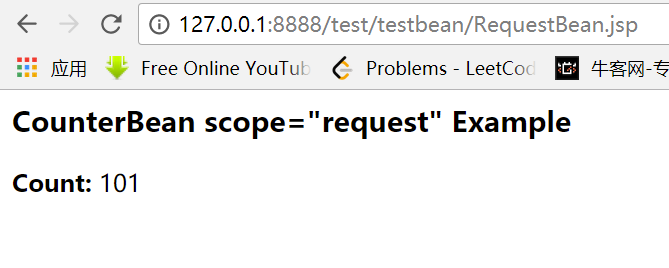

第三十课. jsp_usebean_1
jsp:useBean
- 通过jsp:useBean，可以在JSP中使用定义好的Bean
- Bean的基本要素：
- 必须要有一个不带参数的构造器。在JSP元素创建Bean时会调用空构造器
- Bean类应该没有任何公共实例变量，也就是说，不允许直接访问实例变量，变量名称首字母必需小写
- 通过getter/setter方法来读/写变量的值，并且将对应的变量首字母改成大写
基本用法:
例子：test.jsp/CounterBean.java 不要使用裸体类
我们先看test.jsp：
再看CounterBean.java:
将这个.java文件进行编译，生成.class文件，放在webapp/test/WEB-INF/class/bean目录下，访问：
http://127.0.0.1:8888/test/testbean/test.jsp
发现变量永远是1。
第三十一课. jsp_usebean_scope
jsp:useBean(con.)
- jsp:useBean各项参数含义：
- id:对象实例名称
- scope:Bean作用的范围，默认为page，对整个jsp页面有效
- class:Bean类名称(全名）
- type:Bean实例类型，可以是本类，或其父类，或实现的接口，默认为本类
- Scope各项参数的意义：
- page:仅涵盖使用JavaBean的页面
（PageBean.jsp/CounterBean.java） - request:有效范围仅限于使用JavaBean的请求
- （RequestBean.jsp/RequestBean2.jsp/CounterBean.java）
- session:有效范围在用户整个连接过程中（整个会话阶段均有效）
- （SessionBean.jsp/Session2.jsp/CounterBean.java）
- application:有效范围涵盖整个应用程序。也就是对整个网站均有效
- （Application.jsp/Application2.jsp/CounterBean.java）
- page:仅涵盖使用JavaBean的页面
一、page
先看一个例子：
我们写了一个PageBean.jsp:
|
|
访问地址：
发现count中第一个数是1，第二个是2.
第一个count的显示语句是：<B>count:</B> <%= counterBean.getCount() %>
所以在0基础上加1，得到1.
第二个显示是：<jsp:getProperty name="counterBean" property="count"/>
它和<%= counterBean.getCount() %>效果是一样的，所以也加1，就是2.
二、request
再看RequestBean.jsp：
|
|
其中，
相当于
再看一下RequestBean2.jsp：
运行一下：

可以看到Count的值是101，所以RequestBean和RequestBean2用的是同一个request。当不再使用forward，使用<% response.sendRedirect(“RequestBean2.jsp”) %>
这时RequestBean和RequestBean2不再使用同一个request，而RequestBean2.jsp中的scope是request，所以找不到Count变量，就new一个新的。访问可以看到它的值是1：
三、session
我们看一下SessionBean.jsp：
|
|
访问：
发现每次刷新都自动加1.
当我们新启动一个窗口时，Count又变成了1：
因为它们不是一个session
四、Application
ApplicationBean.jsp代码：
|
|
进行访问：
发现每次刷新都会自动加1.而且即使重新开一个窗口，也会加1，因为Scope是整个application
第三十二课. jsp_set_property
- 建立表单参数和Bean属性之间的关联
- 通过param指定表单元素的名称，通过perperty指定对应的Bean属性名称，由此建立这两个变量的关联
- （SaleEntry.jsp/SaleEntry.java，用url传递参数）
- 通过*来设置所有属性和输入参数之间的关联
- (SayHelloBean.html/SayHelloBean.jsp/HelloBean.java)
在建立Bean属性和表单参数之间的对应关系时，服务器会将对应的参数自动转换成和属性类型匹配的数据
- (SayHelloBean.html/SayHelloBean.jsp/HelloBean.java)
先看SaleEntry.java:
再看SaleEntry.jsp：
运行一下：
这里在前面遇到点小问题，就是原来的代码是value="<%=request.getParameter("itemID")%>" />
跑一下会报一堆错误。后来把双引号改成单引号，就正常了。
再看下一个例子：
先看SayHelloBean.html：
再看SayHelloBean.jsp：
最后看一下HelloBean.java：
|
|
访问一下：
第三十三课. jsp_characterEncoding
如果页面出现乱码，可以在jsp中采用类似下面的方式进行转码：
|
|
第三十四课. jsp_servlet_forward
JSP的内置对象
- out
- request
- response
- pageContext ->用的很少
- session
- application
- config ->用的很少
- exception
- Page->用的很少
JSP编程—out
- Out内置对象是一个缓冲的输出流，用来给客户端返回信息。它是javax.servlet.jsp.JspWriter的一个实例
- 典型应用：向客户端输出内容
- 例：向客户端输出一个字符串“Hello World”
- (HelloWorld.jsp)
- 常用方法：
- println()：向客户端输出各种类型数据
- newLine()：输出一个换行符
- close()：关闭输出流
- flush()：输出缓冲区里的数据
- clearBuffer()：清除缓冲区里的数据，同时把数据输出到客户端
- clear()：清除缓冲区里的数据，但不把数据输出到客户端
- getBufferSize()：返回缓冲区的大小
JSP编程–request
- request内置对象表示的是调用JSP页面的请求。通常，request对象是javax.servlet.http.HttpServletRequest接口的一个实例
典型应用：通过request.getParameter(“paramName”)可以获得Form提交过来的参数值
可以用此对象取得请求的Header、信息（如浏览器版本、语言和编码等）、请求的方式（get/post）、请求的参数名称、参数值、客户端的主机名称等
- 常用方法：
- getMethod()：返回客户端向服务器端传送数据的方法
- getParameter(String paramName)：返回客户端向服务器端传送的参数值，该参数由paramName指定
- getParameterNames()：获得客户端传送给服务器端的所有参数的名字，结果是一个枚举类型数据（Enumeration）
- getParameterValues(String name)：获得指定参数的所有值，由name指定
- getRequestURI（）：获得发出请求字符串的客户端地址
- getRemoteAddr()：获取客户端的IP地址
- getRemoteHost()：获取客户端机器名称
- getServerName()：获取服务器的名字
- getServletName()：客户端所请求的脚本文件路径
- getServerPort()：获取服务器端的端口
- 对应类: javax.servlet.http.HttpServletRequest
JSP-response
- 表示的是返回给客户端的响应
- 是javax.servlethttp.HttpServletResponse接口的一个实例
- 经常用于设置HTTP标题，添加cookie、设置响应内容的类型和状态、发送HTTP重定向和编码URL
- 常用方法：
- addCookie(Cookie cookie)：添加一个Cookie对象，用于在客户端保存特定的信息
- addHeader(String name,String value)：添加HTTP头信息，该Header信息将发送到客户端
- containsHeader(String name)：判断指定名字的HTTP文件头是否存在
- sendError(int)：向客户端发送错误的信息
- sendRedirect(String url)：重定向JSP文件
– 和
– – sendRedirect通过客户端发起二次申请,不同的request对象
– – Jsp:forward是同一个request,在服务器内部转发
– setContentType(String contentType)：设置MIME类型与编码方式
JSP-Cookie
- Http协议的无连接性要求出现一种保存C/S间状态的机制
- Cookie：保存到客户端的一个文本文件，与特定客户相关
- Cookie以“名-值”对的形式保存数据
- 通过getName和getValue的方式得到相应的名字和值
JSP—session & application
- <% @page session=“true”%>（默认）–表示session功能已经在jsp页面中启动
- session常用方法：
- void setAttribute(String name,Object value)
- Object getAttribute(String name)
- boolean isNew()
- application
- ServletContext
Servlet和JSP的通信
- 从JSP调用Servlet可用
请求信息自动传递到Servlet- 或者通过sendRedirect
- 从Servlet调用JSP使用
- RequestDispatcher接口的forward(req, res)方法
- 请求信息需要显式传递(在req、res参数中）
- 或者通过sendRedirect
- 例如:
- FromJspToServlet.jsp / ServletToJsp.java / ServletUseJsp.jsp
- forward可以用 ”/” 路径, 是指web app的根路径, servlet forward jsp的时候一定要用 “/”开头
- jsp sendRedirect到servlet应该用相对路径,因为这里”/”指网站的根路径
- servlet sendRedirect jsp也是
request.getContextPath起作用了
看一个例子：
写一个ServletToJsp.java并编译：
将.class文件放到classes目录下，并在web.xml中进行修改：
看ServletToJSP:
|
|
再看ServletUseJsp.jsp:
|
|
访问http://127.0.0.1:8888/test/servlet/ServletToJSP：
看下一个例子：
文件是FromJspToServlet.jsp：
|
|
访问这个jsp:
发现通过forward指令，该jsp还是跳转到了ServletToJSP